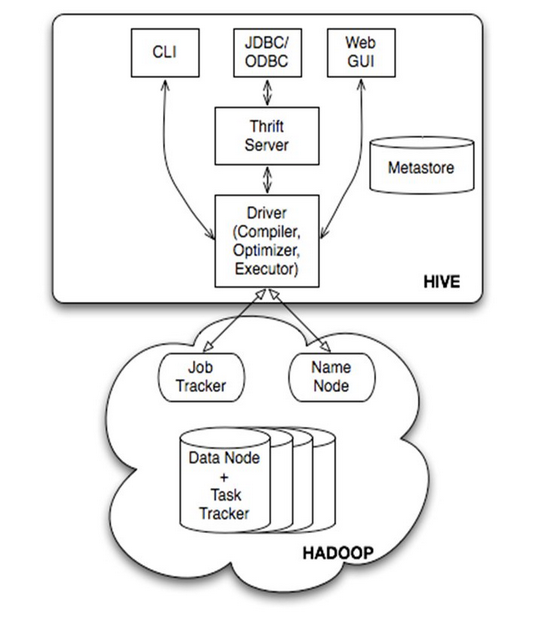
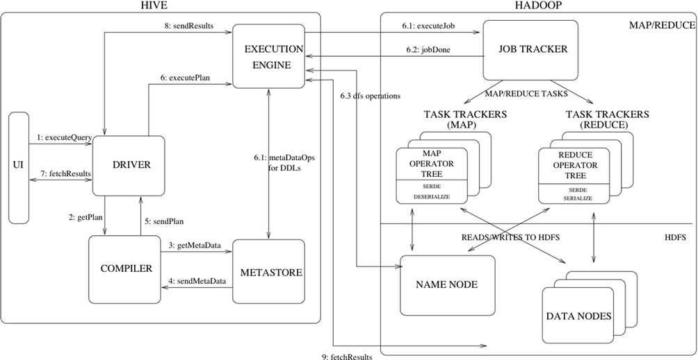

Hive
Table of Contents
1 Hive
Hive
- 一个基于 Hadoop 的数据仓库（data warehouse）工具
- 使用类似于 SQL 语法的 HQL 语句，对存储在 Hadoop 中的大规模数据进行 ETL 操作
- 为存储在 HDFS 的数据赋予特定的结构（数据库、表）
- 支持 HDFS 或其他（比如 HBase）数据存储系统
- 通过 MapReduce 执行查询
Hive 被设计用于海量数据的数据挖掘，数据的访问延迟较高，不适合在线数据查询。
Hive 适合应用在大规模的只增（append-only）数据的批处理作业，比如日志文件。
因为数据仓库的特点是读多写少，所以 Hive 不支持对数据的改写、添加，所有的数据加载之后不再改变。
| 可伸缩性（scalability） | 通过向 Hadoop 中增加节点扩大规模 |
|---|---|
| 可扩展性（extensibility） | 通过 MapReduce 框架和 UDF/UDAF/UDTF |
| 高容错性 | |
| 低耦合度 | 与输入格式解耦 |
1.1 Hive vs RDBMS
| RDBMS | Hive | |
|---|---|---|
| 数据规模 | 小 | 大 |
| 常态操作 | 对数据中的某些行进行操作 | 全表扫描，覆盖旧数据或追加新数据 |
| 性能特征 | 数据加载速度慢，查询速度快 | 数据加载速度快，查询速度慢 |
| 执行延迟 | 低（< 秒） | 高（分钟级） |
| 查询语言 | SQL | HQL |
| 数据存储 | Raw Device 或 Local FS | HDFS |
| 数据格式 | 系统决定 | 用户定义 |
| 加载时检查数据格式（写时模式） | 读取时检查数据格式（读时模式） | |
| 数据更新 | 命令支持 | 通过将原表的数据进行变换，存储在新表实现 |
| 索引支持 | 有复杂的索引 | 无（0.8 后加入位图索引） |
| 事务支持 | 支持 | 不支持 |
| 执行方式 | Executor | MapReduce |
| 可扩展性 | 低 | 高 |
写时模式（Schema on write）
- 加载时检查数据格式
- 如果数据不符合格式，会拒绝加载
读时模式（Schema on read）
- 读取时检查数据格式
- 加载时不检查数据格式，不更改加载的数据文件
1.2 组成

1.2.1 服务端
编译器（Compiler）
优化器（Optimizer）
执行器（Executor）
- 完成 HQL 查询语句从词法分析、语法分析、编译、优化以及查询计划的生成
- 生成的查询计划存储在 HDFS 中，然后调用底层的 MapReduce 计算框架
元数据（Metastore）
- 通常存储在关系数据库中，如 MySQL、Derby
- 包括表的名字、表的属性（是否为外部表等）、列、分区及属性、表数据所在目录等
Thrift 服务
- 一个软件框架，用来进行可扩展、跨语言的服务的开发
- Hive 集成了该服务，为了让不同的编程语言调用 Hive 的接口
1.2.2 客户端
- CLI
- Web GUI
- Thrift 客户端
- 一些客户端接口建立在 Thrift 客户端之上，如 JDBC、ODBC 接口
1.3 执行

1.4 安装
Hive 只需配置在 Hadoop 的 master 节点上。
- 安装配置 Hadoop
- 安装配置数据库（MySQL 等）
- 获得 Hive 源码或者可执行代码
- 配置 Hive 如何访问数据库，如何访问 Hadoop
- 运行 Hive
2 数据
2.1 数据类型
| 字节 | 内容 | |
|---|---|---|
TINYINT |
1 | 有符号整数 |
SMALLINT |
2 | 有符号整数 |
INT |
4 | 有符号整数 |
BIGINT |
8 | 有符号整数 |
FLOAT |
4 | 单精度浮点数 |
DOUBLE |
8 | 双精度浮点数 |
BOOLEAN |
||
STRING |
相当于数据库的 varchar 类型，长度可变 |
ARRAY |
一组有序字段，字段类型必须相同 |
|---|---|
MAP |
一组无序键值对，键必须是原子类型，值可以是任何类型 |
同一个 MAP 的键类型必须相同，值类型也必须相同 |
|
STRUCT |
一组命名字段，字段类型可以不同，eg. Struct('a',1,1,0) |
CREATE TABLE complex( col1 ARRAY<INT>, col2 MAP<STRING,INT>, col3 STRUCT<a:STRING,b:INT,c:DOUBLE> );
SELECT col1[0],col2['b'],col3.c FROM complex;
Hive 不支持日期类型，日期用字符串来表示，常用的日期格式转化操作是通过自定义函数进行操作。
2.2 数据模型
| Database | 相当于关系数据库里的命名空间 |
|---|---|
| 将用户和数据库的应用隔离到不同的数据库、模式中 | |
| Table（托管表） | 和数据库中的 Table 概念类似 |
| 逻辑上由存储数据和元数据（描述表格中的数据形式）组成 | |
| 存储数据（文件）保存在 HDFS ，元数据保存在关系数据库 | |
| External Table（外部表） | 数据文件可以保存在数据仓库，或外部的 HDFS 中 |
| 它和 Table 在元数据的组织上是相同的，而存储数据（文件）则有较大的差异 | |
| Partition（分区） | 对表的数据进行粗略划分的机制，类似索引，但实现方式不同 |
| 一个分区对应于表存储目录的一个子目录，分区的数据存储在对应的目录中 | |
比如，有两个分区，则 par1=100, par2=200 的数据在 /par1=100/par2=200 子目录下 |
|
| Bucket（桶） | 对指定列计算 hash，根据 hash 值切分数据 |
| 存储上，每一个桶对应一个文件，存储 hash 值同余（除以桶数）的记录 | |
eg. 桶数为 2，hash 值除以 2 的余数为 1 的记录存储在文件 000001_0 |
| Table | External Table | |
|---|---|---|
CREATE |
创建与数据加载分开（也可以同时完成） | 创建、加载数据同时完成 |
LOAD |
加载数据的过程中，不对数据进行处理 | 实际数据是存储在指定的（数据仓库外部的） HDFS 路径 |
| 只是将数据文件移动到数据仓库目录中 | 不会移动到数据仓库目录中 | |
SELECT |
直接在数据仓库目录中完成 | |
DROP |
表的数据、元数据同时删除 | 仅删除元数据 |
2.3 数据存储格式
一般数据库
- 有不同的存储引擎，且定义了自己的数据格式
- 所有数据都会按照一定的组织存储，因此，数据库加载数据的过程会比较耗时
Hive
- 没有专门的数据存储格式
- 用户可以自由组织 Hive 中的表，只需要在创建表的时候定义数据格式，Hive 就可以解析数据
| 列分隔符 | e.g. 空格 \t \x001 |
|---|---|
| 行分隔符 | e.g. \n |
| 文件格式 | 默认：TextFile，SequenceFile 以及 RCFile |
3 HQL
3.1 创建
CREATE [EXTERNAL] TABLE [IF NOT EXISTS] <table> [(<column> <type> [COMMENT <comment>], ...)] [COMMENT <comment>] [PARTITIONED BY (<column> <type> [COMMENT <comment>], ...)] [CLUSTERED BY (<column>, <column>, ...)] [SORTED BY (<column> [ASC|DESC], ...)] [INTO <number> BUCKETS] [ROW FORMAT <format>] [STORED AS <format>] [LOCATION <path>]
EXTERNAL |
创建外部表 |
|---|---|
PARTITIONED BY |
创建分区列 |
INTO num_buckets BUCKETS |
|
ROW FORMAT |
eg. \t 分隔行： ROW FORMAT DELIMITED FIELDS TERMINATED BY '\t' |
STORED AS |
eg. 保存格式为文本文件： STORED AS TEXTFILE |
LOCATION |
指定外部表数据文件的路径，如果不加，会存储到 Hive 数据仓库中 |
3.2 加载
LOAD DATA [LOCAL] INPATH '<path>' [OVERWRITE] INTO TABLE <table> [PARTITION (<par>=<value>, ...)]
LOCAL |
表示在本地文件系统中查找文件，否则使用 HDFS |
|---|---|
INPATH |
可以是相对路径、绝对路径、URL |
| 可以是文件（加载一个文件）、目录（加载目录下所有文件） | |
OVERWRITE |
目标表（或者分区）中的内容（如果有）会先被删除 |
PARTITION |
必须指定每一个分区列的值 |
Hive 在从文件加载数据时，只是把指定文件存储到目的位置，文件按原样存储，Hive 不进行解析或转存为内部数据库格式。
3.3 查询
一个 SELECT 语句可以是一个 UNION 查询或一个子查询的一部分。
SELECT [ALL|DISTINCT] <expr>, ... FROM <table> [WHERE <condition>] [GROUP BY <column>] [CLUSTER BY <column> | [DISTRIBUTE BY <column>] [SORT BY <column>]] [LIMIT <number>]
FROM |
可以是一个普通表、一个视图、一个 JOIN 或一个子查询 |
|---|---|
WHERE |
Hive 不支持 IN EXIST 或子查询 |
DISTRIBUTE BY |
使某一列的值相同的数据，都被集中一个 Reduce 节点执行 Reduce 任务 |
CLUSTER BY |
= SORT BY + DISTRIBUTE BY |
## eg. 查询除了 ds 和 hr 之外的所有列： SELECT `(ds|hr)?+.+` FROM sales
分区剪枝
- 查询时只扫描一个表中关心的那一部分
- 当分区条件出现在离
FROM子句最近的WHERE子句中时，查询就可以利用这个特性
HAVING
- Hive 暂不支持
HAVING子句，可以转化为一个子查询
SELECT col1 FROM t1 GROUP BY col1 HAVING SUM(col2) > 10;
SELECT col1 FROM ( SELECT col1, SUM(col2) AS col2sum FROM t1 GROUP BY col1 ) t2 WHERE t2.col2sum > 10;
3.4 插入
INSERT [OVERWRITE|INTO] TABLE <table> SELECT ... // 到另一个 Hive 表 INSERT [OVERWRITE|INTO] LOCAL DIRECTORY '/path/file' SELECT ... // 到本地文件系统 INSERT [OVERWRITE|INTO] DIRECTORY '/path/file' SELECT ... // 到 HDFS
3.5 删除
DROP TABLE [IF EXISTS] <table> [PURGE];
3.6 示例
CREATE TABLE IF NOT EXISTS tmp_filter_ (col STRING); LOAD DATA LOCAL INPATH '' OVERWRITE INTO TABLE tmp_filter_; SELECT ... FROM ... a JOIN tmp_filter_ ON a.=tmp_filter_.col WHERE ...; DROP TABLE IF EXISTS tmp_filter_;
4 函数
4.1 数学
rand() |
返回 0 到 1 之间的随机数 |
4.2 字符串
regexp_extract(subject, pattern, index) |
|
|---|---|
regexp_extract(sample, 'keyN=>(\\d*)\;', 1)
5 命令行
hive <options>
# （为空）启动 Hive shell 环境
-e <query> # 运行 SQL
-f <file> # 运行文件中的命令
-S, --silent # 不把运行信息打印到标准错误输出，只打印查询结果
hive -S -e "SELECT ..." > <file>
hadoop job -kill <job_id>
6 PHP
主要流程
- PHP 通过 Thrift 向 Hive 提交 SQL 查询
- Hive 将 SQL 查询转换成 Hadoop 任务
- Hadoop 执行完毕后，返回一个结果 URI
- PHP 读取 URI 中的内容
// Thrift 依赖包路径 $GLOBALS['THRIFT_ROOT'] = '/server/www/third_part/thrift-0.5.0'; // 加载连接 Hive 所需的文件 require_once $GLOBALS['THRIFT_ROOT'].'/Thrift.php'; require_once $GLOBALS['THRIFT_ROOT'].'/packages/scribe/scribe.php'; require_once $GLOBALS['THRIFT_ROOT'].'/protocol/TBinaryProtocol.php'; require_once $GLOBALS['THRIFT_ROOT'].'/transport/TSocket.php'; require_once $GLOBALS['THRIFT_ROOT'].'/transport/THttpClient.php'; require_once $GLOBALS['THRIFT_ROOT'].'/transport/TFramedTransport.php'; require_once $GLOBALS['THRIFT_ROOT'].'/transport/TBufferedTransport.php'; // 生成的文件？ require_once dirname(__FILE__) . '/Hive.php'; ERROR_REPORTING(E_ALL); INI_SET('DISPLAY_ERRORS','ON'); $socket = new TSocket('hive.corp.gj.com',13080); $socket->setDebug(TRUE); $socket->setSendTimeout(10000); $socket->setRecvTimeout(10000); $transport = new TFramedTransport($socket); $protocol = new TBinaryProtocol($transport); $client = new HiveClient($protocol); try { $transport->open(); } catch(TException $tx) { echo $tx->getMessage(); } // 提交查询任务 $taskId = $client->submitTask('xxx@xxx.com','web','SELECT ...'); if($client->isTaskFinished($taskId)) { // 获取结果 URI $url = $client->getResultURI($taskId); $handle = fopen($url,"rb"); $content = stream_get_contents($handle); fclose($handle); } $transport->close();